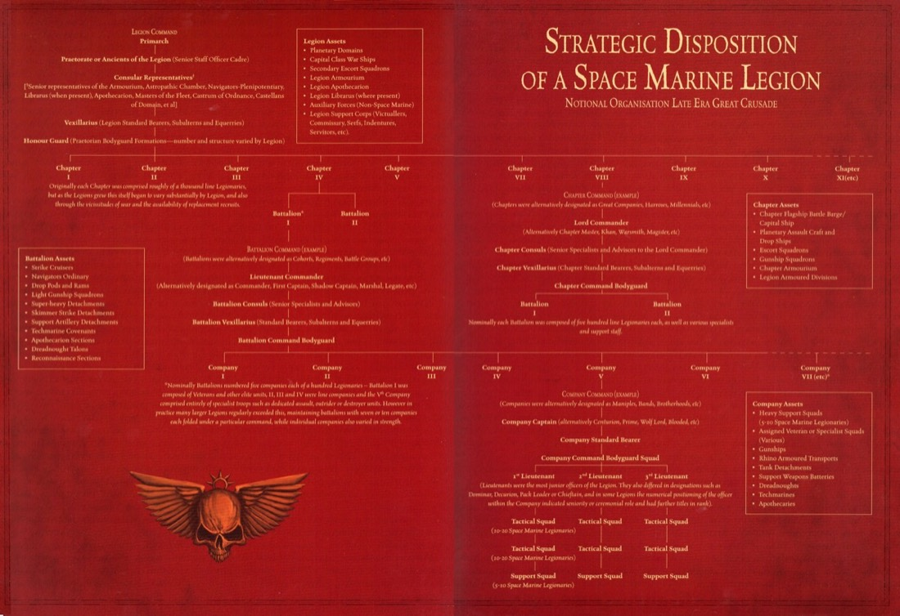

Second Founding
| Second Founding | |
|---|---|
| Reorganisation of the Adeptus Astartes | |
 The structure of a late-crusade Legion, as recorded before the Second Founding broke it into Chapters | |
| Date | 021.M31 (about seven years after the end of the Horus Heresy) |
| Ordered by | Roboute Guilliman, Lord Commander and Imperial Regent |
| Authority | Codex Astartes; the High Lords of Terra |
| Legions divided | The nine loyal First Founding Legions |
| Chapter strength | About one thousand Space Marines |
| Preceded by | First Founding (the Legions of the Great Crusade) |
| Followed by | Later Foundings: the Third Founding (M31) and the Ultima Founding (Era Indomitus) |
The Second Founding was the division of the loyal Space Marine Legions into the small, autonomous Chapters of the reformed Adeptus Astartes. It took place in about 021.M31, some seven years after the death of the Warmaster Horus, and was decreed by the Codex Astartes of Roboute Guilliman.[1] Each of the nine surviving First Founding Legions became a conclave of Chapters. One Chapter in each kept the old Legion's name, heraldry and, usually, its homeworld; the rest took new names and colours and went their separate ways.
The Chapters formed in this way are called the Second Founding Chapters or Successor Chapters. The latter name is reserved, in strict usage, for the Chapters raised from the First Founding Legions, though it is often applied to the product of later Foundings. The Second Founding gave the Imperium the pattern on which it has built its Space Marine forces ever since.
Roughly one thousand Chapters were intended to exist at any time, a number that the Imperium has sought to maintain by periodic Foundings. In the Era Indomitus the figure has been broken: the Ultima Founding of the Primaris Space Marines has swelled many Chapters beyond the old limit, and new Chapters have been raised in great numbers.[2]
Background
[edit]The Space Marine Legions of the Great Crusade were enormous, fielding tens of thousands of Legionaries and sometimes over a hundred thousand. Each was loyal first to its primarch, and the larger Legions were powerful enough to overturn the Imperium. The Heresy had shown it. Nine Legions had followed Horus, and the Imperium survived only because the Emperor and a few loyalist primarchs won at Terra.[3]
The Heresy had also shown the weaknesses of the Legions' gene-seed. The haste of the crusade had left some Legions with defects in their gene-seed and discipline, and several had been tainted by Chaos. Guilliman concluded that the Legion as a unit of command was itself a danger.[1] The Codex was his answer: a doctrine of smaller formations in which no single leader could command more than a thousand warriors.
The division
[edit]
The Codex ordered that every loyal Legion be divided into Chapters of about a thousand warriors. Each Chapter would handle its own recruitment, training and equipment. The Chapter Masters would be answerable to the Emperor, through the High Lords of Terra, and not to the primarchs of their original Legions, with the single exception of the Chapter that retained the Legion's name.[1] Those primarchs who survived the Heresy resisted the plan, and some protested bitterly; Rogal Dorn's refusal ended only after the Iron Cage of about 021.M31.[a] In the end most accepted it as a necessity of the new age.
The first warriors of each new Chapter were drawn from the ranks of the parent Legion, often those who had fought beside their primarch in the Heresy. Their gene-seed was the Legion's gene-seed at first, but each Chapter's stock was later isolated by the Adeptus Mechanicus, so that its line was distinct from those of its siblings.[1] Chapters differed in outlook as well. In some cases the division followed the Legion's own divisions of belief. When the Imperial Fists were divided, the most zealous warriors, those who clung to the old ways of the crusade, formed the Black Templars, while those more willing to follow Guilliman's Codex became the Crimson Fists and others.[4]
Successor Chapters
[edit]The number and identity of the Second Founding Chapters is uncertain. The records are scattered, and many successors have lost all memory of their origin. The earliest known version of the Codex, the Apocrypha of Skaros, states that the Ultramarines founded twenty-three Primogenitor Chapters, but it does not name them all.[4] The following are among the better known.
| Parent Legion | Successor Chapters | Notes |
|---|---|---|
| I, Dark Angels | Angels of Absolution, Angels of Redemption, Angels of Vengeance, Lions Sable | Records withheld by the Dark Angels |
| V, White Scars | Storm Lords, Rampagers, Destroyers, Marauders | Hunting-pack organisation preserved |
| VI, Space Wolves | Wolf Brothers | Only one successor; the Legion was too small to divide further |
| VII, Imperial Fists | Black Templars, Crimson Fists, Excoriators, Fists Exemplar | The Black Templars under Sigismund |
| IX, Blood Angels | Flesh Tearers, Blood Drinkers, Angels Vermillion, Angels Sanguine, Angels Encarmine | All inherit the Legion's flaws |
| X, Iron Hands | Brazen Claws, Red Talons | Rebuilt from the survivors of Isstvan V |
| XIII, Ultramarines | Novamarines, Iron Snakes, Doom Eagles, Black Consuls, Mortifactors, Aurora Chapter and many more | The "Primogenitor" Chapters; the majority of all Second Founding Chapters |
| Other | Grey Knights | Created at the end of the Heresy from gene-seed of unrecorded origin; not derived from a Legion |
The Legions that had been all but destroyed at Isstvan V, the Raven Guard, Iron Hands and Salamanders, were recovered more slowly, and few of them could be divided. No version of the Codex records a Second Founding from the Salamanders, though it does not rule one out. Some Chapters that believe themselves to be of the Second Founding may not be, and the reverse is also true.[4]
Gene-seed and the Adeptus Terra
[edit]The division was accompanied by a more careful control of the Space Marines' creation. The genetic stock of each First Founding Legion was isolated, and the stock of the Traitor Legions was sealed in stasis. The Codex required each new Chapter to tithe part of its gene-seed to the Adeptus Terra and the Mechanicum, and gave the High Lords of Terra the sole power to order the creation of a new Chapter. In this way the Imperium secured control of the means to make Space Marines.[1]
Later Foundings
[edit]Subsequent Foundings were carried out in the same pattern. The Third Founding followed in the 31st millennium at the petition of Rogal Dorn, and a larger Founding came after the War of the Beast (544–546.M32); and several more Foundings in the following millennia filled the gaps left by those lost in war. These later Chapters are called Successors only loosely, and are distinguished from the Second Founding by their later dates.[5] By the 41st millennium, the Imperium had, in theory, about a thousand.
The most recent is the Ultima Founding, the creation of the Primaris Space Marines revealed in 999.M41, at the start of the Era Indomitus, by the Archmagos Belisarius Cawl, using a gene-seed refined from that of Guilliman. Cawl's Primaris Marines were created in great numbers to reinforce the Chapters of the Second Founding and the other Foundings, and to raise new ones. The Lord Commander has tolerated, and even encouraged, Chapters swelling past a thousand, in contradiction of the Codex, on the grounds that the Imperium's need is greater than the principle.[2] Many Chapters, such as the Ultramarines, now field both "Firstborn" and Primaris warriors side by side. Some have returned to their parent Legion's old strength; the primarch Lion El'Jonson, long absent, has returned to the Dark Angels in the early 42nd millennium.[6]
Legacy
[edit]The Second Founding is the origin of nearly every Space Marine Chapter in the Imperium, and its logic underlies the structure of the Astartes today. It prevented a repeat of the Heresy by the simple expedient of making a coup impossible, and it spread the Space Marines across the Imperium, where they have served as its fire brigade for ten thousand years.[1] It also cost the Imperium the unity of the Legions, and the cohesion of their traditions. The Chapters which remember their Legion most closely, such as the Space Wolves and the Dark Angels, are among those that most resent the Codex.[4]
Timeline
[edit]| Date | Event |
|---|---|
| c. 700.M30 | First Founding of the twenty Space Marine Legions. |
| 014.M31 | End of the Horus Heresy; Roboute Guilliman named Lord Commander and begins the Great Scouring. |
| c. 014–021.M31 | Guilliman writes the Codex Astartes on Terra and Macragge. |
| c. 021.M31 | The Iron Cage: the Imperial Fists are saved by the Ultramarines and Rogal Dorn accepts the Codex. |
| c. 021.M31 | The Codex is completed and the traitor gene-seed placed under stasis seals. |
| 021.M31 | The Second Founding: the nine loyal Legions divided into Chapters; the Black Templars and the Primogenitor Chapters of the Ultramarines raised. |
| M31 | The Third Founding, at the petition of Rogal Dorn. |
| c. 546.M32 | A larger Founding after the War of the Beast.[b] |
| 999.M41 | The Ultima Founding of the Primaris Space Marines by Belisarius Cawl. |
See also
[edit]Notes
[edit]References
[edit]- ^ a b c d e f Guilliman, Roboute (c. 019.M31). Codex Astartes. Macragge.
- ^ a b Cawl, Belisarius (c. 999.M41). Notes on the Ultima Founding. Mars.
- ^ Chronicles of the Heresy (sealed). Logos Historica Verita, Terra.
- ^ a b c d e Lexicanum Martialis. Officio Militaris.
- ^ Annals of the War of the Beast (M32). Officio Assassinorum (sealed).
- ^ Records of the Indomitus Crusade (ongoing). Office of the Lord Commander.